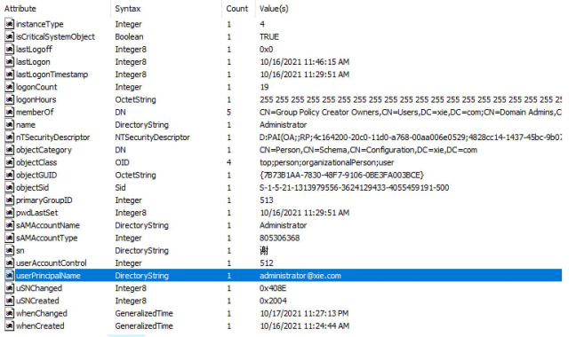

域中常见名词¶
在学习域的过程中，我们经常会碰到一些专有名词，如：AD、CN、OU、DN 等。
AD¶
AD是Active Directory活动目录的缩写。我们先来看看什么是活动目录。日常生活中我们的电话本记录着亲朋好友的电话和姓名等数据，这就是 Telephone Directory 电话目录；计算机中的文件系统记录着文件的文件名、大小和日期等数据，这就是 File Directory 文件目录。而Active Directory 活动目录是微软对通用目录服务的实现，它使用LDAP作为其主要访问协议。活动目录存储着有关网络中各种对象的信息，如用户账户，计算机账户，组和Kerberos使用的所有相关凭据等信息。活动目录让管理员和用户能够轻松地查找和使用这些信息。活动目录服务(AD DS ,Active Dirctory Domain Service)是Windows Server 2000 操作系统平台的中心组件之一，活动目录可以作为活动目录域服务(ADDS)或活动目录轻型目录服务(ADLDS)部署。活动目录使用了一种结构化的数据存储方式，并以此作为基础对目录信息进行合乎逻辑的分层组织。
所以可以看出，Acitive Directory 其实就是目录服务数据库。目录服务数据库也是一种数据库，这种数据库相比较于我们熟知的关系型数据库(比如MySQL,SQLServer,Oracle)，主要有以下几个方面的特点。
- 它成树状结构组织数据，类似文件目录一样。
- 它是为查询、浏览和搜索而优化的数据库，也就是说活动目录数据库的读性能特别强，但是写性能差，而且还不支持事务处理、回滚等复杂功能。
LDAP¶
既然有了目录服务数据库了，就必然需要目录访问协议去访问目录服务数据库了。而 LDAP 协议就是设计用来对目录服务数据库访问的协议之一。
LDAP(Lightweight Directory Access Protocol)轻量级目录访问协议，它基于X.500 标准，是一个开放的、中立的、工业标准的应用协议。它可以用来查询与更新活动目录数据库，活动目录利用 LDAP 名称路径来描述对象在活动目录内的位置。
LDAP 目录类似于文件系统目录，例如：CN=DC01,OU=Domain Controllers,DC=xie,DC=com，如果类比成文件系统的话，可被看作如下文件路径：xie.com/Domain Controllers/DC01，DC01代表一个对象，OU=Domain Controllers 代表一个 Domain Controllers 组织单位。这句话的含义就是 DC01 这个对象处在 xie.com 域的 Domain Controllers 组织单元中。在 LDAP 中数据以树状方式组织，在树状信息中的基本数据单元是条目，而每个条目由属性组成。
例如图所示，DC01、win7、test 等都是一个条目，也是一个对象，这些对象都有自身的属性。
X.500 标准定义¶
那么 LDAP 协议如何能快速的定位需要查询的对象呢？
完成这项工作需要定义名称空间，使其可以快速的确定每个对象的位置，下面我们来看看 X.500 标准中定义了哪些东西。
1.DC¶
DC(Domain Component) 域组件：此 DC 不是 Domain Controllers 域控，而是类似于 DNS 中的每个元素，DC 对象表示使用 DNS 来定义其名称空间的 LDAP 树的顶部。例如域 xie.com，用 . 分开的每个单元都可以看成是一个 DC 域组件。
2.OU¶
OU(OrganizationUnit) 组织单位：在活动目录数据中定义了 Organization Unit组织单位类，最多可以有四级，每级最长 32 个字符，可以为中文。如OU=Domain Controllers 就是一个组织单位，组织单位中包含对象、容器，还可以包含其他组织单位，并且组织单位还可以链接组策略。如图所示，可以看到Domain Controllers 的 objectClass 属性是 OrganizationUnit。

3.CN¶
CN(Common Name) 通用名称：对象的名称，最大长度可以到 80 个字符，可以为中文。例如一个用户名为张三，那么张三就是一个 CN，再比如一个计算机名为Win7，那么 Win7 就是 CN。
4.DN(包含上面三个元素)¶
DN(Distinguished Name)可分辨名称：Active Directory 中的每个对象都有完全唯一的 DN，其包含对象到 LDAP 名称空间根的整个路径。DN 有三个属性，分别是 DC、OU、CN。DN 可以表示为 ldap 的某个目录，也可以表示成目录中的某个对象，这个对象可以是用户、计算机等。
如：CN=AD,OU=Domain Controllers,DC=xie,DC=com 这是一个 DN，它是层次结构树，从右(根)向左(叶)。表示的是 xie.com 域下的 Domain Controllers 组织单元下 的 AD 对象。如图所示：
再如：CN=Administrator,CN=Users,DC=xie,DC=com 这是一个 DN，表示的是xie.com 域下的 Users 容器下的 Administrator 对象。如图所示：
5.RDN¶
RDN(Relative Distinguished Name) 相对可分辨名称：他与目录结构无关。比如CN=Administrator,CN=Users,DC=xie,DC=com，他的 RDN 为CN=Administrator。两个对象可以具有相同的 RDN，但是不能具有相同的 DN。
6.UPN¶
UPN(User Principal Name)用户辨别名称：如在域 xie.com 中的 administrator用户，它的 UPN 为：administrator@xie.com 。用户登录时最好输入 UPN，因为无论此用户的账号被移动到哪一个域，其 UPN 都不会变化，因此用户可以一直用同一个 UPN 来登录。如图所示，可以看到 administrator 的 UPN。

7.容器 Container¶
在活动目录数据中定义了容器 Container 类，容器是一些属性的集合。容器内可以包含其他对象，如用户、计算机等，但是容器中不能再嵌套其他容器和 OU 组织单位。计算机默认在 CN=Computers 容器中，用户默认在 CN=Users 容器中。如图所示，可以看到 CN=Computers 的 objectClass 属性为 container。
FQDN¶
FQDN(Fully Qualified Domain Name)全限定域名：同时带有主机名和域名的名称。如域 xie.com 下的 win7 主机，其 FQDN 为 win7.xie.com。全限定域名可以从逻辑上准确地表示出主机在什么地方，也可以说全限定域名是主机名的一种完全表示形式。从全限定域名中包含的信息可以看出主机在域名树中的位置。